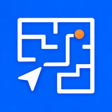

館内ナビ
全国施設版
47都道府県の大型商業施設・19駅・20言語対応
☰
① 都道府県を選ぶ
② 施設を選ぶ
🗺
公式マップ/案内
📍 現在地を選ぶ
館内の場所
検索
↑
5m進む（デモ）
▶ 自動歩行
🔄 再ルート
案内終了
現在地の補正
先に、今いる改札・入口を選んでください。
センサーは案内開始時に自動で起動します。
-
現在地
0°
向き
補正済
位置精度
🧭 方位
👣 歩数
📡 GPS精度
駅と全国の代表的な大型商業施設では、選んだ入口から概算距離・向かうエリア・移動手順を表示します。数値は実測ではなく、左右の曲がり方や階・区画は公式マップで確認してください。
施設の方へ
利用規約
プライバシー
特商法表記
🗺 公式構内図